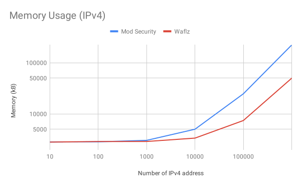
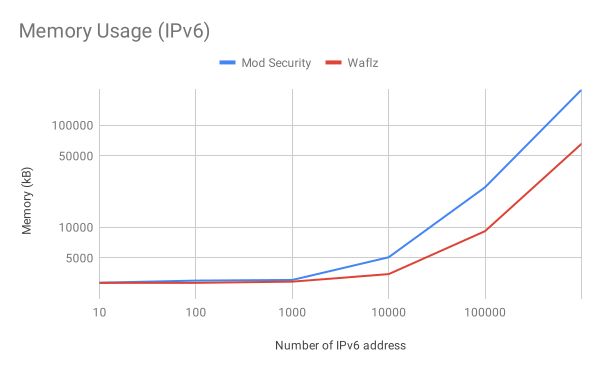
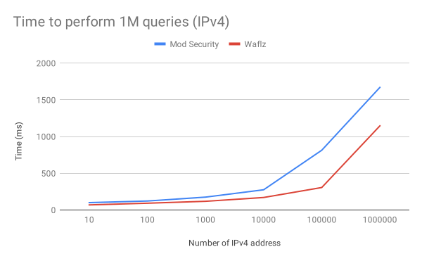
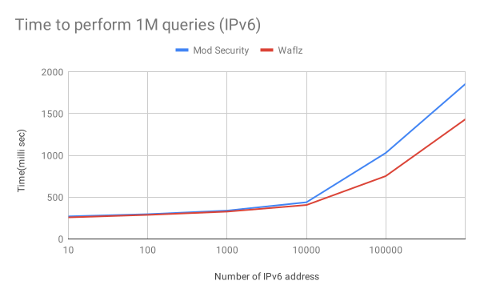

Appendix¶
ACL Rule ID mapping¶
waflz internal access control lists’ (ACLs’) use 80XXX rule prefixes for alerts (ip/content-type/etc) -see also: Access Control Lists
| ACL Setting | OWASP CRS 2.2.9 | waflz |
|---|---|---|
| ASN | 430001 | 80001 |
| Allowed content-types | 960010 | 80002 |
| Cookie | 430004 | 80003 |
| Country | 430425 | 80004 |
| Disallowed file extensions | 960035 | 80005 |
| Disallowed headers | 960038 | 80007 |
| IP | 430108 | 80008 |
| Allowed methods | 960032 | 80009 |
| Referer | 430003 | 80010 |
| URL | 430002 | 80011 |
| User-Agent | 430614 | 80012 |
| HTTP version | 960034 | 80013 |
IP Trie Performance¶
Comparing memory and query performance between the waflz IP Tree and ModSecurity msc_tree implementations.

Comparing ModSecurity vs waflz iptrie Memory Usage (IPv4)

Comparing ModSecurity vs waflz iptrie Memory Usage (IPv6)

Comparing ModSecurity vs waflz iptrie Search Performance (IPv4)

Comparing ModSecurity vs waflz iptrie Search Performance (IPv4)